축산산업기사 (2011-03-20 기출문제)
1과목: 가축번식 육종학
1. 닭에서 산육능력과 관계가 먼 것은?
- 사료요구율
- 산란강도
- 우모 발생속도
- 체형
(정답률: 65%)

2. 송아지의 백근병은 어떤 영양소의 결핍 또는 대사장해에 의해 일어나는가?
- Se
- Mg
- P
- Ca
(정답률: 70%)
3. 고기소의 경제 형질 가운데 유전력이 가장 높은 것은?
- 분만 간격
- 이유시 체중
- 사료 효율
- 배장근 단면적
(정답률: 85%)
4. 난자를 배출하는 부위는?
- 자궁경
- 난소
- 수란관
- 자궁각
(정답률: 87%)
5. 가축의 성염색체 형이 암컷이(♀) XO, 수컷(♂)이 호모로서 XX형인 것을 말하는 것은?
- 소
- 말
- 돼지
- 닭
(정답률: 80%)
6. 다음은 한우를 사육하고 있는 어느 목장의 X개체에 대한 가계도이다. X의 근교계수는 얼마인가? (단, X는 반형매간교배이다.)
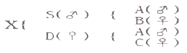
- 0.50
- 0.25
- 0.125
- 0.40
(정답률: 76%)
7. 다음 ( )안에 적합한 것은?
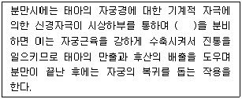
- 난포자극호르몬
- 황체형성호르몬
- 성장호르몬
- 옥시토신
(정답률: 88%)
8. 젖소의 산유 능력 검정에 있어 개체의 산유 능력을 정확하게 평가 비교하기 위해서 비유전적 요인에 대한 통계적 보정이 필요하다. 다음 중 보정할 필요가 없는 요인은?
- 착유속도
- 착유회수
- 분만연령
- 공태기간
(정답률: 81%)
9. 다음 중 유전력에 대한 설명으로 틀린 것은?
- 전체 분산 중에서 유전분산이 차지하는 비율이다.
- 유전력이 낮은 형질의 예로는 소의 수태율을 들 수 있다.
- 유전력이 낮다는 것은 개체간의 차이가 유전요인에 의해 발생된다는 의미이다.
- 유전력이 20~30% 인 때는 중도(中度)의 유전력이라 한다.
(정답률: 69%)
10. 돼지의 교배방법 중 육돈세대와 모돈세대에서 잡종강세를 최대한 이용할 수 있는 장점을 가진 것은?
- 퇴교배
- 일대잡종의 이용
- 상호역교배
- 3품종 종료교잡법
(정답률: 82%)
11. 돼지의 근교계통 육성시 번식능력 저하를 방지하기 위한 대책은?
- 고도의 근친교배를 실시한다.
- 종모돈의 수를 최소한으로 유지한다.
- 사양관리를 개선한다.
- 육성 도중 불량 개체는 엄격히 도태한다.
(정답률: 74%)
12. 어떤 종돈장에서 집단 내 암퇘지의 첫배 평균산자수가 8.8마리였는데 산자수 한 형질에 대하여 선발한 결과 선발된 암퇘지의 평균 산자수는 9.9마리였다면 선발차는 얼마인가?
- 0.9마리
- 1.1마리
- 0.55마리
- 18.7마리
(정답률: 85%)
13. 다음 중 가축육종 방법으로서 실용화되기 가장 어려운 방법은?
- 근친교배
- 돌연변이
- 잡종교배
- 선발법
(정답률: 89%)
14. 다태(多胎)동물에 있어서 자궁내 배의 착상부위 결정요인이 아닌 것은?
- 자궁근의 교반운동
- 자궁근의 수축파
- 난관의 수축작용
- 배반포의 상호밀접 방어작용
(정답률: 67%)
15. 돼지에 있어서 분만 후 28일째 자돈을 이유할 경우 대부분 이유한 날로부터 며칠 사이에 발정이 오는가?
- 1~2일
- 4~5일
- 7~8일
- 10~11일
(정답률: 80%)
16. 릴렉신(relaxin)에 대한 설명 중 옳지 않는 것은?
- 릴렉신(relaxin)이 기능을 발휘하기 위해서는 난포호르몬의 선행작용이 있어야 한다.
- 난포호르몬의 전처리를 받은 릴렉신(relaxin)은 치골 결합을 분리시켜 태아가 용이하게 골반을 통과 하도록 한다.
- 난포호르몬과 협동하여 유선발육을 촉진시킨다.
- 난소에서 분비되는 호르몬으로 스테로이드 호르몬이다.
(정답률: 76%)
17. 이란성 쌍태아 중 암컷에 많이 생기는 것은?
- 프리마틴
- 음낭헤르니아
- 난소낭종
- 콜레라
(정답률: 82%)
18. 번식장해의 가장 큰 원인이 되는 것은?
- 고창증
- 간장염
- 자궁 내막염
- 근친교배
(정답률: 78%)
19. 돼지의 잡종강세를 이용하기 위한 교배법에 해당되지 않는 것은?
- 퇴교배
- 일대잡종의 이용
- 상호역교배
- 근친교배
(정답률: 85%)
20. 소의 발정에 대한 설명 중 옪지 않은 것은?
- 미경산우는 나이 많은 소보다 발정지속 시간이 짧은 경향이 있다.
- 평균 발정주기는 28일이다.
- 발정개시 시각은 한밤중부터 이른 아침까지가 많고 오후부터 개시하는 것은 적다.
- 소의 나이가 많아지면 발정지속 시간이 증가되는 경향이 있다.
(정답률: 73%)
2과목: 가축사양학
21. 유지율 2%인 우유 20㎏은 유지율 4%인 우유로 환산하면 몇 ㎏에 해당되는가?
- 17㎏
- 15㎏
- 14㎏
- 16㎏
(정답률: 57%)
22. 곡류사료의 영양적 특성에 대한 설명 중 적당하지 않은 것은?
- 단백질 함량이 높고 아미노산 조정이 좋다.
- 에너지 함량이 높고 조섬유 함량이 낮다.
- 영양소의 소화율이 높고 기호성이 좋다.
- 일반적으로 Ca과 P의 함량이 적다.
(정답률: 72%)
23. 영양소 공급능력에 비하여 부피가 크고 섬유소 함량이 많은 사료를 조사료라 하는데 다음의 사료 중 조사료에 해당되지 않는 것은?
- 볏짚
- 옥수수사일리지
- 건초
- 대두박
(정답률: 71%)
24. 반추가축 사료의 소화율 감소에 영향을 미치는 요인이 아닌 것은?
- 미생물 제제 첨가
- 지방사료 섭취량 증가
- 거친 조사료 함량 증가
- 미세하게 분쇄 곡류나 분말 조사료
(정답률: 72%)
25. 면실박에 들어있는 유독성분은?
- myrosinase
- linamarin
- glucosinolate
- gossypol
(정답률: 83%)
26. 16%의 조단백질을 함유하는 비육돈 사료를 만들기 위하여 기초사료(조단백질 10%)와 단백질사료(조단백질 35%)를 이용할 때 기초사료와 단백질사료는 어떤 비율로 섞어야 되는가?
- 기초사료 : 단백질사료 = 24 : 76
- 기초사료 : 단백질사료 = 76 : 24
- 기초사료 : 단백질사료 = 36 : 64
- 기초사료 : 단백질사료 = 64 : 36
(정답률: 72%)
27. 다음 보기가 설명하는 닭의 병은?
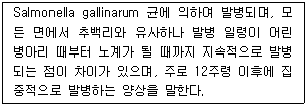
- 파라티푸스감염증
- 가금콜레라
- 포도상구균증
- 가금티푸스
(정답률: 78%)
28. 유지요구량(maintenance requirement)에 영향을 미치는 요인을 잘못 설명한 것은?
- 임계온도 내에서는 유지요구량이 낮다.
- 스트레스는 유지요구량을 감소시킨다.
- 체구가 크면 유지요구량이 증가한다.
- 생산능력이 높은 동물일수록 유지요구량이 높다.
(정답률: 78%)
29. 육성 비육돈 사료에서 사료의 에너지 함량을 높여 줌으로서 나타나는 효과로 틀린 것은?
- 등지방층이 두꺼워진다.
- 배장근단면적이 적어진다.
- 일당증체량이 많아진다.
- 도체율이 낮아진다.
(정답률: 76%)
30. 함유황(sulfur containing amino acids)아미노산이 아닌 것은?
- 시스틴(cystine)
- 메치오닌(methionine)
- 히스티딘(histdine)
- 시스테인(cysteine)
(정답률: 65%)
31. 정미에너지를 표시하려면 대사에너지에서 어떤 에너지를 제외하면 되는가?
- 열량증가로 손실되는 에너지
- 뇨로 손실되는 에너지
- 가스로 손실되는 에너지
- 분으로 손실되는 에너지
(정답률: 77%)
32. 가금에 주로 이용되는 에너지 표시방법은?
- 대사에너지(ME)
- 소화에너지(DE)
- 정미에너지(NE)
- 총가소화에너지(TDN)
(정답률: 81%)
33. 반추가축(육우, 젖소)의 제 1위내에서 에너지원으로 흡수되는 영양소가 아닌 것은?
- 아세트산(Acetic acid)
- 프로피온산(Propionic acid)
- 부티르산(Butyric acid)
- 스테아르산(Stearic acid)
(정답률: 66%)
34. 다음 중 에너지(energy) 가 가장 높은 사료는?
- 대두박
- 호맥
- 옥수수
- 밀기울
(정답률: 85%)
35. 가축의 성장곡선(S자 곡선)에 대한 설명 중 옳은 것은?
- 태아시기와 출생 후 성성숙까지는 성장률이 빨리 증가한다.
- 성성숙기 이후부터 빠른 성장을 한다.
- 성숙체중에 가까워지면 성장률은 더욱 빨라진다.
- 일정한 속도를 유지하며 성장한다.
(정답률: 74%)
36. 반추동물의 위는 4개로 구성되어 있는데 다음 중 단위동물의 위와 비슷한 기능을 하는 것은?
- 제 1위(rumen)
- 제 2위(reticulem)
- 제 3위(omasum)
- 제 4위(abomasum)
(정답률: 85%)
37. 산란계에서 산란피크로 올라가는 시기의 사양관리 중 잘못된 것은?
- 물과 사료는 항상 먹을 수 있도록 해 주어 충분한 영양을 공급한다.
- 20주령을 전후로 점등시간을 등가시켜 주며 백색계에 비해 체중이 무거운 갈색계는 점등교체시기를 다소 빠르게 해 준다.
- 온도, 습도 및 환기상태를 수시로 점검하고 최적의 환경조건을 만들어 준다.
- 산란피크에 도달하면 생리적으로 질병에 대한 저항력이 약해지므로 가급적 산란율이 오르고 있는 기간 중 가능한 모든 예방접종을 실시한다.
(정답률: 85%)
38. 보통의 반추 가축사료에서 주된 에너지 공급원이 되는 영양소는?
- 탄수화물
- 단백질
- 지방
- 비타민
(정답률: 78%)
39. 육우의 제각 방법 중 수산화칼륨(가성칼리)를 이용하였을 때 가장 적절한 제각 시기는?
- 출생후 10일 이내 실시
- 출생후 30일 이내 실시
- 출생후 60~90일 사이에 실시
- 이유직후 거세와 병행실시
(정답률: 75%)
40. 다음 중 맹장이 가장 발달되어 있는 가축은?
- 소
- 말
- 돼지
- 닭
(정답률: 75%)
3과목: 축산경영학
41. 다음 중 축산농가의 이윤을 극대화시켜주는 적정자원투입 수준은? (단, MR은 한계수입, MC는 한계비용을 의미한다.)
- MR ＜ MC
- MR ＞ MC
- MR = MC
- AR ＞ MC
(정답률: 69%)
42. 다음 중 육계의 육성율로 가장 적합한 것은?
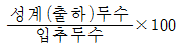
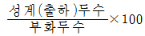
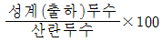
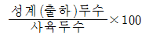
(정답률: 68%)
43. 어느 한우 비육농가에 대한 경영분석결과 비육우 1두당 년간 조수입은 210만원이었으며 이 때 변동비는 63만원 이었고 고정비는 126만원이었을 때 손익분기 조수입(손익분기점)은 얼마인가?
- 126만원
- 150만원
- 180만원
- 210만원
(정답률: 56%)
44. 낙농경영에서 경영비에 속하지 않는 비목은?
- 소농기구 구입비
- 우유대
- 사료구입비
- 감가상각비
(정답률: 65%)
45. 축산물 유통기능 중 시간적, 장소적, 형태적 효용을 창출하는 물적기능에 해당하지 않는 것은?
- 저장기능
- 운송기능
- 가공기능
- 판매기능
(정답률: 75%)
46. 토지의 적재력(loading ability)dp 관한 성명으로 옳지 않은 것은?
- 가축을 사육할 수 있는 장소
- 제반시설 및 노동이 가해지는 장소
- 아무리 이용하여도 소모되지 않는 장소
- 가축을 사육하는데 필요한 사료작물을 재배하는 장소
(정답률: 70%)
47. 산란계 경영에서 사료를 2㎏ 급여하였을 때 계란생산은 10개였다. 3㎏을 급여하였을 때 계란을 12개 생산했다면 사료의 한계생산은 얼마인가?
- 1
- 2
- 3
- 4
(정답률: 67%)
48. 단기적으로 한우비육우의 가격이 평균총비용보다는 낮지만 평균가변비용(평균유동비)보다는 높을 때 비육우생산은 어떻게 해야 하는가?
- 생산을 증가한다.
- 생산을 중단한다.
- 생산을 지속한다.
- 생산을 확대한다.
(정답률: 66%)
49. 축산경영자가 의사결정 과정에서 가장 먼저 취해야 할 것은?
- 경영목표의 설정과 문제의 의식
- 경영과 관련된 제반 사실의 관찰
- 선택된 대안을 행동으로 실행
- 실행한 행동에 대한 책임부담과 재평가
(정답률: 70%)
50. 축산은 농업의 일부이지만 경종농업과는 경영적인 입장에서 볼 때 다른 특징을 가지고 있다. 다음 중 축산경영의 특징과 거리가 먼 것은?
- 축산경영에서는 경지면적의 대소보다는 가축수에 따라 그 규모가 결정된다.
- 축산은 답리작 사료의 생산을 통해 토지의 이용률을 증진시킬 수 있다.
- 대부분의 축산노동력은 농번기와 농한기가 명확히 구별되어 있다.
- 축산은 경종농업에 비해 자연적 피해가 적어 농업의 안정화에 기여할 수 있다.
(정답률: 80%)
51. 우리나라 축산의 기업화를 곤란하게 하는 요인이 아닌 것은?
- 자본금 조달문제
- 노동력 조달문제
- 과다한 사료생산 문제
- 토지 소유문제
(정답률: 71%)
52. 양축농가의 단기지급능력을 측정하는 대표적인 비율이 유동비율이다. 다음 중 유동비율을 나타낸 것은?
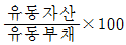
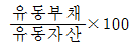
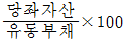
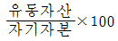
(정답률: 45%)
53. 다음 중 자본재 평가방법이 아닌 것은?
- 취득원가법
- 시가평가법
- 이동평균법
- 추정가평가법
(정답률: 65%)
54. 축산경영의 대규모화에 의한 규모의 경제성에 대한 설명으로 맞지 않는 것은?
- 규모 확대에 따른 수확체감이 발생할 경우
- 대형기계의 공동이용으로 평균비용의 인하가 발생할 경우
- 생산요소의 대량 구입에 의해 가격 인하가 발생할 경우
- 축산물의 대량 판매로 인하여 추가적인 이익이 발생할 경우
(정답률: 58%)
55. 다음 중 유통자본재는 어느 것인가?
- 종돈
- 착유우
- 산란계
- 육우
(정답률: 72%)
56. 축산경영의 3요소가 아닌 것은?
- 노동력
- 자본재
- 소득
- 토지
(정답률: 72%)
57. 축산물생산비 중 암묵비용에 해당하는 것은?
- 타인자본이자
- 차입토지자본이자
- 자기토지자본이자
- 고용노동평가액
(정답률: 69%)
58. 축산농가에서 생산한 축산물이 소비자에게로 넘어가는 모든 기업활동의 행위와 이행(履行)을 유통이라 하는데 다음 중 유통의 기능으로서 잘못된 항목은?
- 축산물의 구매와 판매
- 축산물의 저장과 가공
- 축산물의 수송
- 축산물의 생산
(정답률: 70%)
59. 다음 중 낙농소득의 산출식으로 맞는 것은?
- 조수입 - 생산비
- 순수익 – 경영비
- 사양관리자가노임 + 지대 + 자기자본이자 + 순수익
- 유대 + 지역수입 + 구비평가수입
(정답률: 63%)
60. 생산함수 3영역을 생각할 때 제1영역에서는 생산을 계속하는 것이 유리하고, 제2영역은 경제적으로 합리적인 범위이며, 제3영역은 경제적 유리성을 찾을 수 없는 영역 이다. 다음 중 제2영역을 설명하는 것은? (단, MPP은 한계생산, APP는 평균생산을 의미한다.)
- MPP ＞ APP
- MPP ＜ APP
- MPP = APP
- MPP ＜ O
(정답률: 48%)
4과목: 사료작물학
61. 연맥(귀리)에 관한 설명으로 틀린 것은?
- 밀보다는 척박지의 토양산성에 대한 적응성이 강하다.
- pH5.6~6.2 정도의 약산성 토양에 잘 자란다.
- 우리나라 전역에서 원동이 잘되는 작물이다.
- 벼를 제외한 다른 화곡류 보다 가장 많은 수분을 요한다.
(정답률: 61%)
62. 건초의 조제 및 이용시 장ㆍ 단점 설명으로 틀린 것은?
- 천일건초의 경우 비타민 D의 함량이 높다.
- 조제과정에서 두과목초의 영양소 손실이 적다.
- 조제에 있어서 기후의 영향을 많이 받는다.
- 송아지의 소화관 발달을 촉진시킨다.
(정답률: 77%)
63. 건초 조제후의 수분함량으로 가장 적당한 것은?
- 45 ~ 55%
- 30 ~ 45%
- 15 ~ 25%
- 0 ~ 15%
(정답률: 62%)
64. 오차드 그리스에 대한 설명 중 틀린 것은?
- 겨울이 추운 높은 산지에는 가을에만 파종해야 한다.
- 채종으로 이용하는 것 이외에는 혼파하는 것이 좋다.
- 청예, 건초 및 사일리지로 이용할 수 있다.
- 생육에 가장 알맞은 기온은 15 ~ 21℃ 정도이다.
(정답률: 70%)
65. 목초를 청예로 이용할 때 고려할 사항 중의 하나는 예취 후의 재생이다. 재생에 영향을 주는 요인에는 많은 것이 있지만 그 중에서도 저장 탄수화물의 축적은 매우 중요하다. 그러면 콩과(두과)목초인 알팔파에 있어서 재생에 필요한 탄수화물을 가장 많이 함유하고 있는 부위는?
- 잎(blade)
- 줄기(stem)
- 관부(crown)
- 뿌리(root)
(정답률: 61%)
66. 다음 보 기의 설명에 해당하는 해충류는?
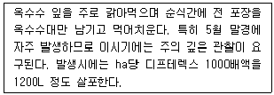
- 멸강나방
- 조명나방
- 밤나무혹벌
- 미끈이하늘소
(정답률: 73%)
67. 다음 중 재생력이 가장 강하고, 방목지용으로 적합한 콩과목초는?
- 라디노 클로버
- 스위트 클로버
- 레드 클로버
- 알팔파
(정답률: 50%)
68. 다음 중 초기 생육이 빠른 것은?
- 이탈리안 라이그라스
- 레드 톱
- 티머시
- 톨 페스큐
(정답률: 71%)
69. 다음 중 우리나라에서 오차드 그라스 중심의 혼파초지 조성시 가장 알맞은 콩과목초는?
- 알팔파
- 레드 클로버
- 라디노 클로버
- 버어드풋 트레포일
(정답률: 54%)
70. 건초위주 사양시 체중 500㎏의 소 1마리가 1일 섭취해야 할 건초의 양은?
- 5 ~ 10㎏
- 10 ~ 15㎏
- 15 ~ 20㎏
- 20 ~ 25㎏
(정답률: 64%)
71. 다음 중 남방형(난지형) 목초에 속하는 것은?
- 알사이크 클로버
- 오차드 그라스
- 화이트 클로버
- 버뮤다 그라스
(정답률: 58%)
72. 유우의 방목 개시 적기로 가장 적당한 화본과 초장은? (단, 초생량 5,000 ~ 7,000㎏ 일 때)
- 20 ~ 25㎝
- 30 ~ 35㎝
- 40 ~ 45㎝
- 50 ~ 55㎝
(정답률: 56%)
73. 다음 중 방목의 단점은?
- 번식장애 발생
- 영양분 불균형
- 내ㆍ 외기생충 피해 발생
- 초지이용 기간 연장
(정답률: 71%)
74. 건초의 상대사료가(RFV)가 130이고, 잎의 비율이 35 ~ 45% 이며, 이물질이 10%이하이고, 곰팡이 썩은 냄새, 먼지 이 없는 콩과건초의 등급은?
- 1등급
- 2등급
- 3등급
- 4등급
(정답률: 65%)
75. 다음 중 토양수분이 적절한 조건에서 잡초억제와 토양피복을 신속히 할 수 있는 장점이 있으나 비료나 종자의 손실량이 많은 파종방법은?
- 조파
- 산파
- 대상조파
- 점파
(정답률: 60%)
76. 이 목초는 세포내에 기생하는 곰팡이와 공생하여 더운 여름에 견디는 힘이 비교적 강하고, 짧은 지하경과, 잎의 견고성으로 방목과 추위에도 강한 초종이다. 그러나 곰팡이에 감염된 이 목초를 섭취한 가축은 생산성이 떨어지기 때문에 종자구입시 주의가 요구된다. 이 초종은 어떤 것인가?
- 알팔파(Alfalfa)
- 오차드 그라스(Orchardgrass)
- 톨 페스큐(Tall fescue)
- 리드 카나리그라스(Reed canarygrass)
(정답률: 55%)
77. 사일리지용 옥수수의 수확적기에 대한 설명으로 맞는 것은?
- 생육단계가 유숙기(milk stage)에 도달하였을 때
- 유선(milk line)이 옥수수알맹이의 1/2 ~ 3/4 사이에 있을 때
- 암이삭으로부터 수염이 나오기 시작하여 60일째 정도
- 옥수수의 건물함량이 75% 정도가 되었을 때
(정답률: 61%)
78. 국내에서 개발한 사일리지용 옥수수 품종과 관계있는 것은?
- 점보
- 스피트오트
- 파이오니어 988
- 광평옥
(정답률: 71%)
79. 건초의 품질을 평가하는 기준이 아닌 것은?
- 녹색도
- 곤포의 크기
- 잎의 비율
- 수분함량
(정답률: 78%)
80. 일정한 면적을 4 ~ 10개의 목구로 나누어 순차적 돌아가면서 방목하는 방법으로 초지의 이용률이 좋은 것은?
- 계목(繫牧)
- 고정방목(固定放牧)
- 윤환방목(倫煥放牧)
- 대상방목(帶狀放牧)
(정답률: 71%)